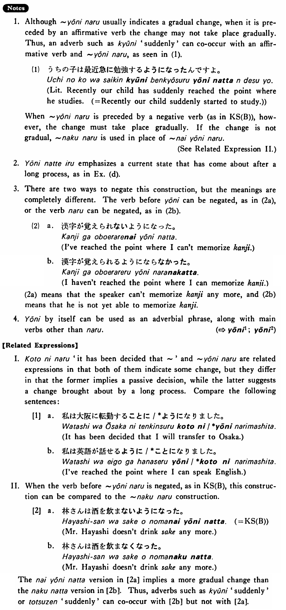

←
DoJG
→
ようになる
(B. 559)
Example sentences
(ksa).
ジャクソンさんは日本語が話せる
ようになった・なりました
。
Mr. Jackson has reached the point where he can speak Japanese.
(ksb).
林さんは酒を飲まない
ようになった・なりました
。
Mr. Hayashi has reached the point where he does not drink sake. / Mr. Hayashi doesn’t drink sake any more.
(a).
難しい日本語が読める
ようになりました
。
I am finally able to read difficult Japanese.
(b).
パットは私と話さない
ようになった
。
Pat doesn't talk with me any more.
(c).
もうすぐ面白さが分かる
ようになります
よ。
You'll soon come to understand the fun of it, I tell you.
(d).
この道は今通れない
ようになっている
。
This street has reached a point where people cannot pass. / At present we cannot use this street.
Formation
Vinformal nonpast
ようになる
{話す /話さない}
ようになる
Someone reaches the where he talks/doesn’t talk
{食べる /食べない}
ようになる
Someone reaches the point where he eats/doesn’t eat
